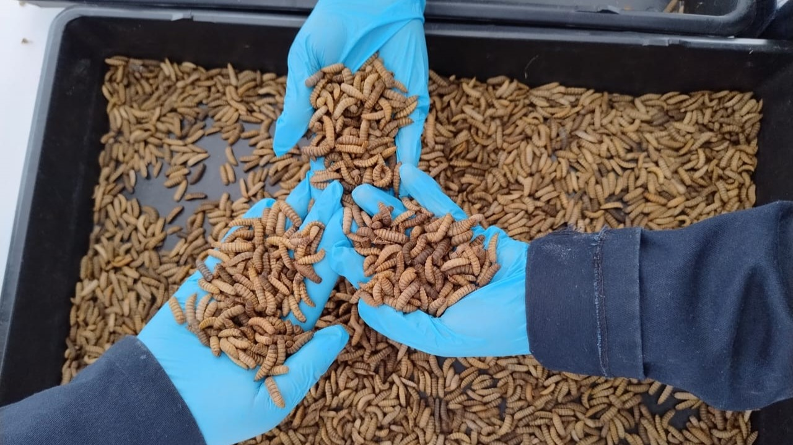
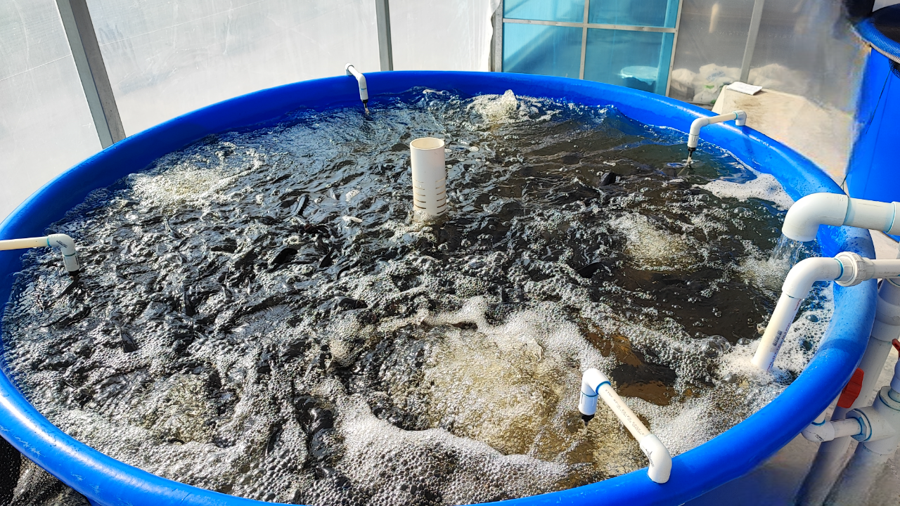

Recorridos


En nuestra sección de visitas, abrimos las puertas de nuestra empresa para que conozcas de cerca cómo transformamos residuos en recursos valiosos. Durante el recorrido, podrás observar cada etapa del proceso, desde la bioconversión de residuos hasta la producción de hortalizas frescas sin agroquímicos. Además, podrás observar cómo las distintas áreas que componen a Rancho Los Dragones.
Nos entusiasma compartir nuestro modelo de producción sustentable, responder tus preguntas y fomentar el aprendizaje sobre economía circular, agricultura regenerativa e innovación ambiental. ¡Te esperamos para vivir una experiencia única y transformadora!
Más información